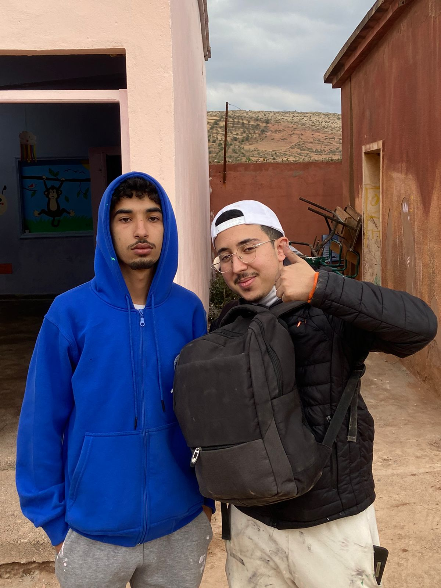
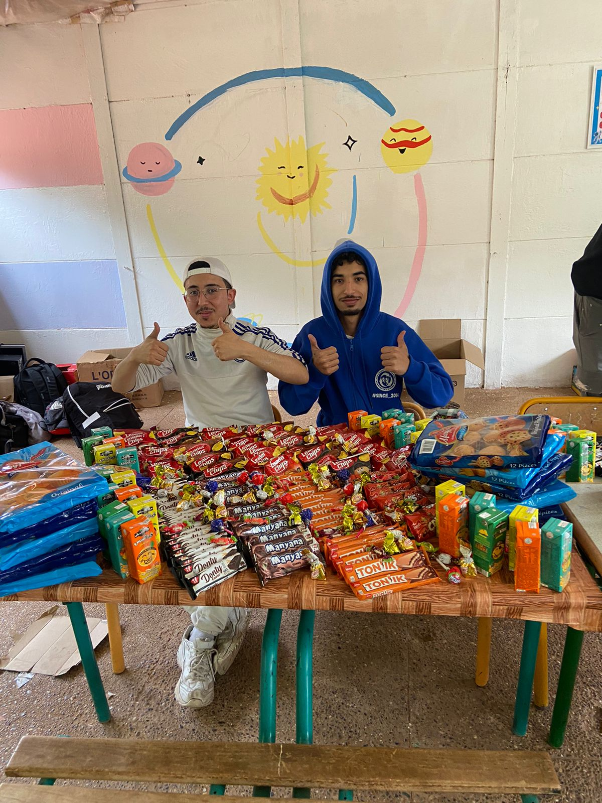

Rabya Raghib
2004 - 2024
The Man, The Myth, The Legend
About
- Introduction: "Rabya, the urban legend of our time, was born with a computer in his hands and Wi-Fi in his heart. He quickly mastered the art of procrastination while making it look like hard work."
- Background: "After solving almost all of the world"s problems by playing Valorant, Rabya decided to take on more ambitious projects, like breaking the record for the most cups of tea consumed in a day."
Timeline
- 2004 - First Words: "Rabya's first word was 'JavaScript.' His parents were proud."
- 2010 - Discovery of the Internet: "Rabya stumbles upon the Internet and quickly becomes a meme expert. He is now fluent in every dialect of the meme language."
- 2015 - First Million Lines of Code: "After hitting the milestone of writing his first million lines of code, Rabya realized that half of them were just debugging."
- 2020 - Invention of the Rabya Method: "Rabya invents a new programming method that involves staring at the screen until the code writes itself. It has yet to catch on."
- 2024 - Untimely Demise: "In 2024, Rabya tragically passed away after attempting to debug a line of code for 72 hours straight without coffee. His final words were, 'It's just a missing semicolon…'"
Facts

Rabya was always one step ahead of everyone else in our group. This was not due to any extraordinary abilities or secret skills but rather because he had a unique approach to time management. Instead of spending hours in class, Rabya often skipped lectures to dedicate himself to his so-called 'secret projects.' These projects were shrouded in mystery, leading many of us to believe he was working on groundbreaking research or developing new technologies. However, the truth was far less conventional. Rabya's 'secret projects' turned out to be marathon sessions of video gaming, where he immersed himself in the virtual worlds of his favorite games. This unexpected revelation came as a surprise to us all, as it seemed that his unconventional approach to balancing academics and leisure allowed him to stay ahead of the curve in a way we hadn’t anticipated.

Rabya's sense of humor is as sharp and precise as his coding skills. This means that his wit and comedic timing are not only clever but also finely tuned, much like his ability to write and debug complex code. His jokes often revolve around the trials and tribulations of programming, showcasing his ability to find humor in the challenges of coding. However, the real punchline comes when you consider the context in which his humor shines the brightest: when his code actually works as intended. The moments of triumph, when Rabya’s intricate algorithms and intricate code snippets execute flawlessly, are often accompanied by his most amusing remarks. His humor tends to emerge as a celebration of these rare, gratifying instances when everything falls into place, and he can finally enjoy the satisfaction of a job well done—while also delighting in the quirks and oddities of the coding process. It’s a blend of technical prowess and comedic flair that makes Rabya’s humor both endearing and entertaining, especially for those who appreciate the nuances of programming.
Testimonials
"If you ever wondered what it's like living with a human tornado, just move in with Rabya. His room is like a museum exhibit on 'The Art of Organized Chaos.' There are computer parts everywhere—keyboards, wires, half-finished projects. But the real magic happens when he’s trying to cook. Rabya treats the kitchen like he treats his code: throw a bunch of stuff together, hope it works, and if it doesn't, add more spice and call it a day. Somehow, though, it always ends up edible... kind of like his code always compiles after 27 tries."
"Living with Rabya is an experience, to say the least. You'd think someone who spends hours in front of a computer would be quiet and focused—wrong. He's got this habit of narrating his own coding process out loud like he's hosting a tech podcast. And don't even get me started on the midnight debugging sessions. Half the time, I wake up at 3 AM to the sound of Rabya shouting, 'It's not a bug, it's a feature!' Only to find him in the kitchen, making Atay like it’s part of the problem-solving process."

Marouane and Khalil after Rabiya's funeral
Quote
"Sidi Rbi khle9 10 wa3rin, ana mnhum.."